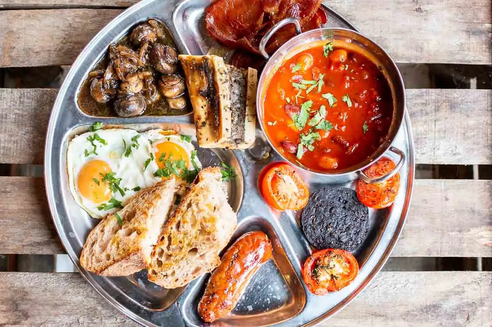
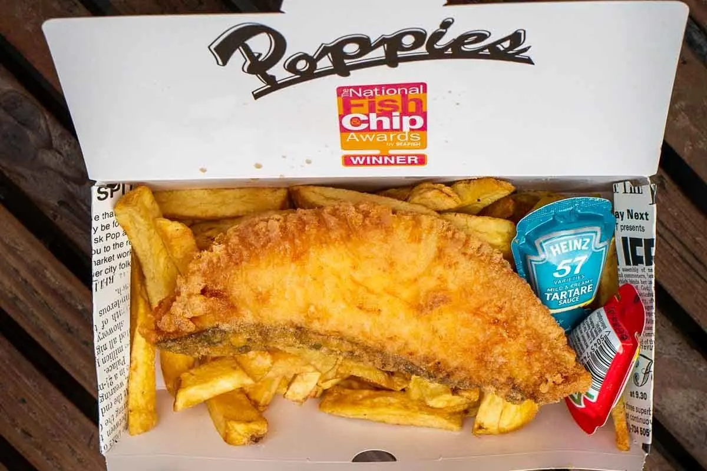
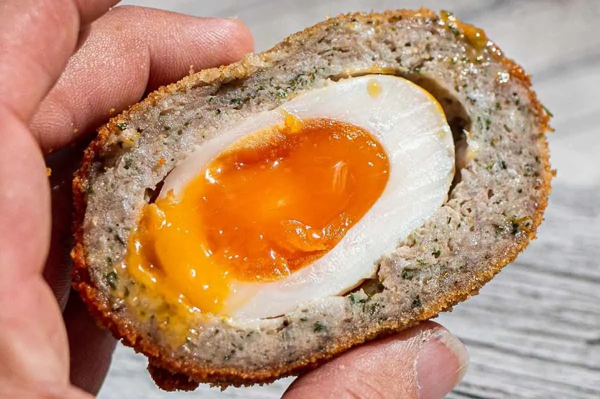
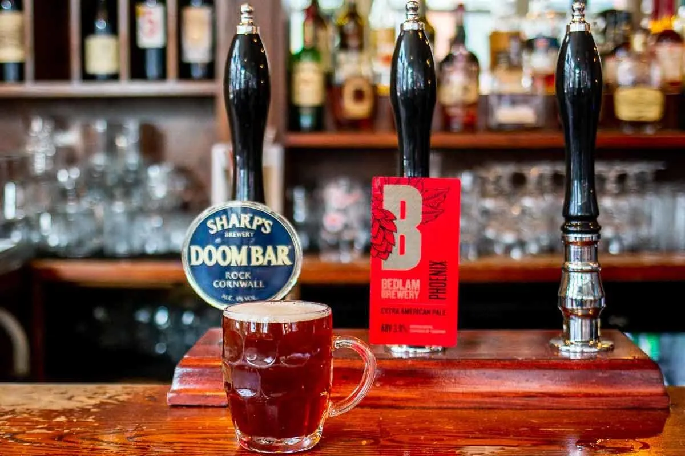
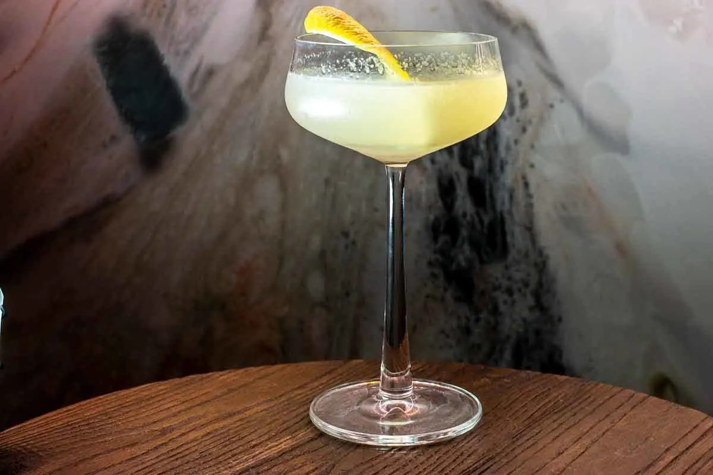
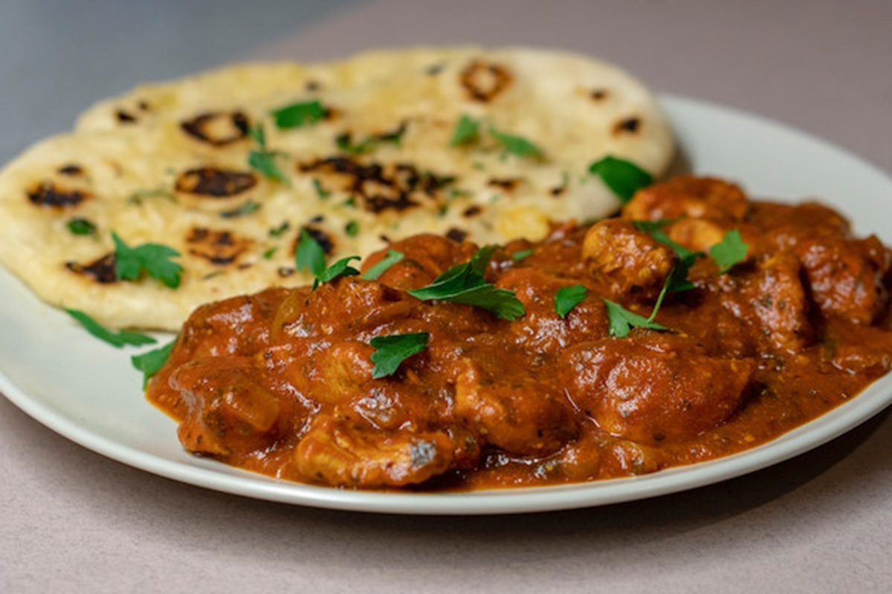
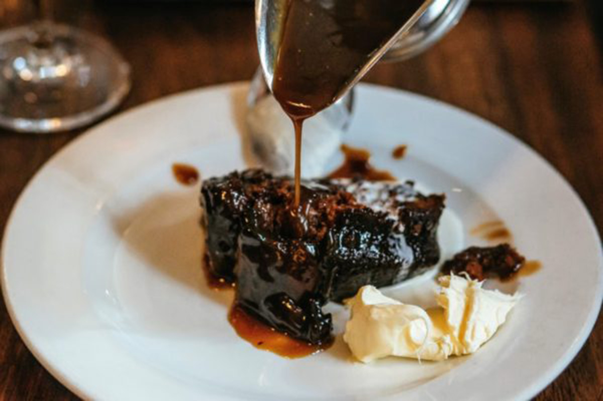
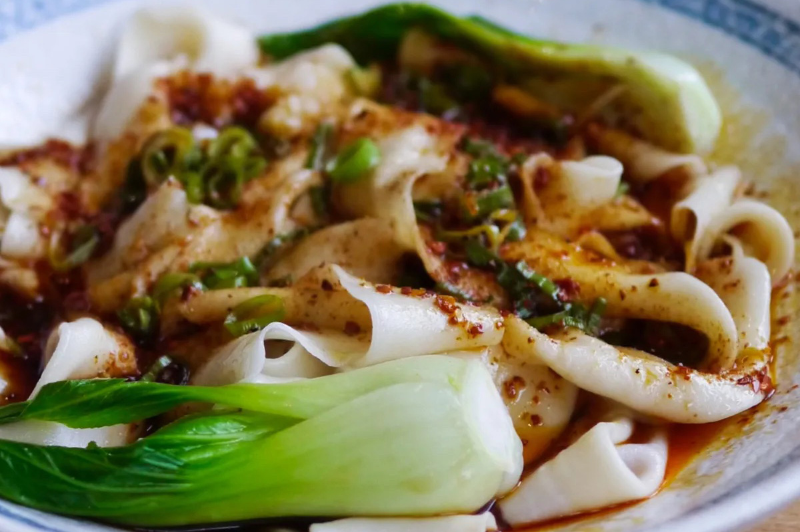

Best Full English Breakfast - Blighty

Best Fish and Chips - Poppies

Best Scotch Egg - Fortnun and Mason

Best Beer - The Princess of Shoreditch

Best Cocktails - Nine Lives

Best Chicken Tikka - Punjab

Best Sticky Toffee Pudding - Hawksmoor Borough

Best Biang Biang Noodles - Xi'an Impression